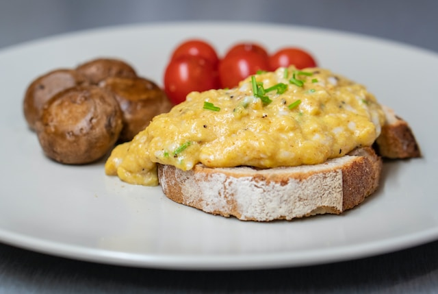

Scrambled eggs are a simple yet delightful culinary creation that never fails to satisfy. To prepare them, crack fresh eggs into a bowl, add a pinch of salt and a dash of pepper, and whisk vigorously until the yolks and whites blend seamlessly. Heat a non-stick skillet over medium-low heat, add a small amount of butter or oil, and pour in the beaten eggs. Gently stir with a spatula, allowing them to form soft, curd-like folds as they cook to creamy perfection. The result is a comforting, versatile dish that can be enjoyed plain, with a sprinkle of herbs, cheese, or even a dollop of salsa, making scrambled eggs a beloved breakfast classic loved by many.